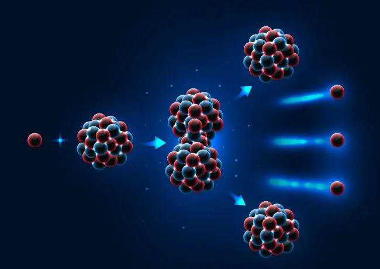
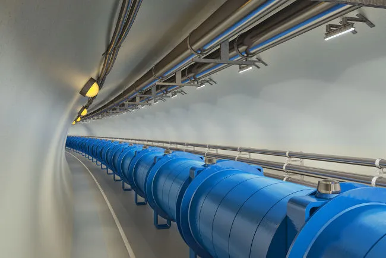

Física Nuclear é o estudo das partículas constituintes dos núcleos atômicos, como prótons e nêutrons, e das interações existentes entre elas. Essas interações são capazes de manter as partículas unidas em distâncias extremamente pequenas, da ordem de poucos nanômetros (10-9 m). Alguns exemplos de fenômenos estudados pela Física Nuclear são decaimentos radioativos, fissões nucleares, fusões nucleares, etc.
A Física Nuclear estuda os fenômenos físicos relativos aos núcleos atômicos, como transições de energia, decaimentos radioativos, fissão e fusão nuclear, entre outros. O estudo da Física Nuclear envolve o desenvolvimento de modelos que expliquem o funcionamento dos núcleos atômicos e sua constituição, aplicações da energia nuclear em tratamentos médicos, desenvolvimento de tecnologias para a detecção de radiação, novas fontes de energia, etc.

As aplicações tecnológicas diretamente relacionadas ao estudo da Física Nuclear estão relacionadas a processos industriais, eficiência energética, explorações astronômicas, etc. Além disso, esse estudo promove melhorias à saúde, meio ambiente e agricultura.
Física Nuclear e indústria
Muitas técnicas derivadas da Física Nuclear, mais explicitamente de aceleradores de partículas, passaram a ser usadas em processos industriais, promovendo aumento de sua eficiência e grande impacto econômico.

Uma das aplicações mais importantes para a indústria são os detectores utilizados na determinação da composição de materiais semicondutores. Os semicondutores figuram como a matéria-prima de todos os componentes eletrônicos usados, desde chips presentes nos computadores e celulares até simples conexões elétricas. Para que esses componentes funcionem perfeitamente, é de fundamental importância que sua pureza seja garantida. Dessa forma, técnicas de caracterização de elementos químicos, como a PIXE (emissão de raios X induzida por partículas), medem a emissão de raios X de amostras bombardeadas por prótons durante a colisão do feixe de prótons com os núcleos atômicos. Essas técnicas medem também a emissão de ondas eletromagnéticas para determinar características, como massa atômica e carga elétrica, de algum material.
A técnica PIXE e outras técnicas, como a PIGE (emissão de raios gamas induzida por prótons), são capazes de determinar a exata composição de diversos tipos de amostras. São também utilizadas em museus para determinar-se a originalidade de uma obra e em sondas espaciais, como a Mars Rover, que tem o intuito estudar a composição do planeta Marte.
Física Nuclear no Brasil
Um dos precursores da pesquisa científica na área da Física no Brasil foi o físico ucraniano Gleb Wataghin. Wataghin ingressou na USP em 1934, onde iniciou suas pesquisas sobre raios cósmicos e sobre Física Nuclear. Na época, investia-se pouco nesse tipo de pesquisa, então, os primeiros instrumentos necessários para o estudo da Física Nuclear foram construídos pelos alunos da primeira turma de Física daquela universidade: Marcelo Damy e Oscar Sala. A partir dessa época, a pesquisa em Física Nuclear no Brasil cresceu até atingir visibilidade internacional.